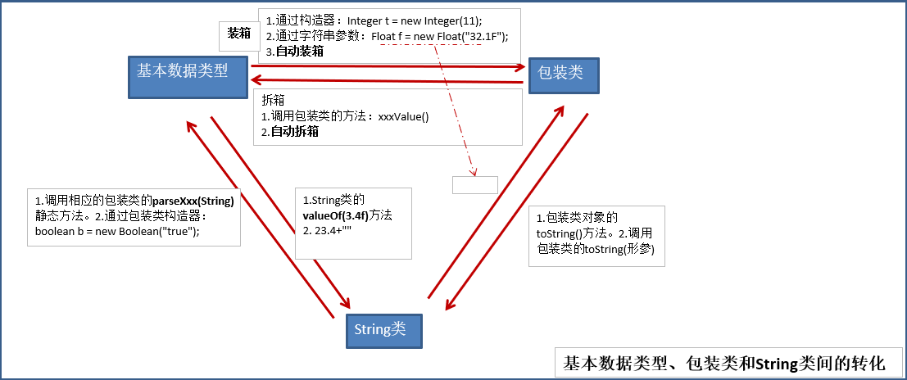

课程：宋红康 JAVA
String
public final class String
implements java.io.Serializable, Comparable<String>, CharSequence {
/** The value is used for character storage. */
private final char value[];
/** Cache the hash code for the string */
private int hash; // Default to 0
String的概念
String:字符串，使用一对
""引起来表示。String 声明为 final 的，不可被继承
String 实现了 Serializable 接口：表示字符串是支持序列化的。实现了 Comparable 接口：表示 String 可以比较大小
String 内部定义了 final char[ ] value 用于存储字符串数据
String:代表不可变的字符序列。简称：不可变性。具体的说就是我们在常量池里面创建的字符串的 value 改变时，这个 value不会被替换掉，会重新开辟空间，创建一个字符串。体现：
- 当对字符串重新赋值时，需要重写指定内存区域赋值，不能使用原有的 value 进行赋值。
- 当对现有的字符串进行连接操作时，也需要重新指定内存区域赋值，不能使用原有的 value 进行赋值。
- 当调用 String 的 replace()方法修改指定字符或字符串时，也需要重新指定内存区域赋值，不能使用原有的 value 进行赋值。
@Test public void test1(){ String s1 = "abc";//字面量的定义方式 String s2 = "abc"; //字符串常量池中是不会存储相同内容的字符串的。所以才会为true System.out.println(s1 == s2);//比较s1和s2的地址值:true System.out.println(s1 == "abc");//true System.out.println(s1 == new String("abc"));//false s1 = "hello"; System.out.println(s1 == s2);//比较s1和s2的地址值:false System.out.println(s1);//hello System.out.println(s2);//abc System.out.println("*****************"); String s3 = "abc"; s3 += "def"; System.out.println(s3);//abcdef System.out.println(s2); System.out.println("*****************"); String s4 = "abc"; String s5 = s4.replace('a', 'm'); System.out.println(s4);//abc System.out.println(s5);//mbc }通过字面量的方式（区别于 new）给一个字符串赋值，此时的字符串值声明在字符串常量池中。
字符串常量池中是不会存储相同内容的字符串的。
String 的实例化方式：
通过字面量定义的方式
通过 new + 构造器的方式
面试题：String s = new String(“abc”);方式创建对象，在内存中创建了几个对象？
两个:一个是堆空间中 new 结构，另一个是 char[]对应的常量池中的数据：”abc”
@Test
public void test2(){
//通过字面量定义的方式：此时的s1和s2的数据javaEE声明在方法区中的字符串常量池中。
String s1 = "javaEE";
String s2 = "javaEE";
//通过new + 构造器的方式:此时的s3和s4保存的地址值，是数据在堆空间中开辟空间以后对应的地址值。
String s3 = new String("javaEE");
String s4 = new String("javaEE");
System.out.println(s1 == s2);//true
System.out.println(s1 == s3);//false
System.out.println(s1 == s4);//false
System.out.println(s3 == s4);//false
System.out.println("***********************");
Person p1 = new Person("Tom",12);
Person p2 = new Person("Tom",12);
System.out.println(p1.name.equals(p2.name));//true
System.out.println(p1.name == p2.name);//true
p1.name = "Jerry";
System.out.println(p2.name);//Tom
}
字符串的拼接
常量与常量的拼接结果在常量池。且常量池中不会存在相同内容的常量。
只要其中有一个是变量，结果就在堆中。
如果拼接的结果调用 intern()方法，返回值就在常量池中
@Test public void test4(){ String s1 = "javaEEhadoop";//常量池 String s2 = "javaEE"; String s3 = s2 + "hadoop";//堆 System.out.println(s1 == s3);//false final String s4 = "javaEE";//s4:常量 String s5 = s4 + "hadoop";// 常量池 System.out.println(s1 == s5);//true } @Test public void test3(){ String s1 = "javaEE"; String s2 = "hadoop"; String s3 = "javaEEhadoop"; String s4 = "javaEE" + "hadoop"; String s5 = s1 + "hadoop";//堆 String s6 = "javaEE" + s2;//堆 String s7 = s1 + s2;//堆 System.out.println(s3 == s4);//true System.out.println(s3 == s5);//false System.out.println(s3 == s6);//false System.out.println(s3 == s7);//false System.out.println(s5 == s6);//false System.out.println(s5 == s7);//false System.out.println(s6 == s7);//false String s8 = s6.intern();//返回值得到的s8使用的常量值中已经存在的“javaEEhadoop” System.out.println(s3 == s8);//true }面试题
public class StringTest { String str = new String("good");//堆 char[] ch = { 't', 'e', 's', 't' };// 常量池 public void change(String str, char ch[]) { str = "test ok"; ch[0] = 'b'; } public static void main(String[] args) { StringTest ex = new StringTest(); ex.change(ex.str, ex.ch); System.out.println(ex.str);//good System.out.println(ex.ch);//best } }为什么 ex.str=good？
首先 String str 是一个成员变量，在方法里面的形参也是一个变量，ex.change(ex.str, ex.ch)，相当于把成员变量的 String str=good 赋值给形参的 String str=good（赋值的是地址值） ，而方法里面的 str = “test ok”是把常量池里面的字符串地址值赋值给形参的 str 。这一系列操作都不影响属性 String str。
而对于数组， char ch[] = char[] ch = { ‘t’, ‘e’, ‘s’, ‘t’ } - - ->赋值了堆空间的地址值—>数组的字符在常量池里 – >ch[0] = ‘b’改变的是数组第一个元素指向堆空间的值
常见方法
int length()：返回字符串的长度： return value.length
char charAt(int index)： 返回某索引处的字符 return value[index]
boolean isEmpty()：判断是否是空字符串：return value.length == 0
String toLowerCase()：使用默认语言环境，将 String 中的所有字符转换为小写
String toUpperCase()：使用默认语言环境，将 String 中的所有字符转换为大写
String trim()：返回字符串的副本，忽略前导空白和尾部空白
boolean equals(Object obj)：比较字符串的内容是否相同
boolean equalsIgnoreCase(String anotherString)：与 equals 方法类似，忽略大小写
String concat(String str)：将指定字符串连接到此字符串的结尾。 等价于用“+”
int compareTo(String anotherString)：比较两个字符串的大小
String substring(int beginIndex)：返回一个新的字符串，它是此字符串的从 beginIndex 开始截取到最后的一个子字符串。
String substring(int beginIndex, int endIndex) ：返回一个新字符串，它是此字符串**从 beginIndex 开始截取到 endIndex(不包含)**的一个子字符串。
boolean endsWith(String suffix)：测试此字符串是否以指定的后缀结束
boolean startsWith(String prefix)：测试此字符串是否以指定的前缀开始
boolean startsWith(String prefix, int toffset)：测试此字符串从指定索引开始的子字符串是否以指定前缀开始
boolean contains(CharSequence s)：当且仅当此字符串包含指定的 char 值序列时，返回 true
int indexOf(String str)：返回指定子字符串在此字符串中第一次出现处的索引
int indexOf(String str, int fromIndex)：返回指定子字符串在此字符串中第一次出现处的索引，从指定的索引开始
int lastIndexOf(String str)：返回指定子字符串在此字符串中最右边出现处的索引
int lastIndexOf(String str, int fromIndex)：返回指定子字符串在此字符串中最后一次出现处的索引，从指定的索引开始反向搜索
注：indexOf 和 lastIndexOf 方法如果未找到都是返回-1
String replace(char oldChar, char newChar)：返回一个新的字符串，它是通过用 newChar 替换此字符串中出现的所有 oldChar 得到的。
String replace(CharSequence target, CharSequence replacement)：使用指定的字面值替换序列替换此字符串所有匹配字面值目标序列的子字符串。
String replaceAll(String regex, String replacement)：使用给定的 replacement 替换此字符串所有匹配给定的正则表达式的子字符串。
String replaceFirst(String regex, String replacement)：使用给定的 replacement 替换此字符串匹配给定的正则表达式的第一个子字符串。
匹配：boolean matches(String regex)：告知此字符串是否匹配给定的正则表达式。
切片：
String[] split(String regex)：根据给定正则表达式的匹配拆分此字符串。
String[] split(String regex, int limit)：根据匹配给定的正则表达式来拆分此字符串，最多不超过 limit 个，如果超过了，剩下的全部都放到最后一个元素中。
String 与基本数据类型、包装类之间的转换
String 与 char[ ]之间的转换
String–>char[]:调用 String 的toCharArray()char[]–>String:调用 String 的构造器
@Test
public void test2(){
String str1 = "abc123"; //题目： a21cb3
char[] charArray = str1.toCharArray();
for (int i = 0; i < charArray.length; i++) {
System.out.println(charArray[i]);
}
char[] arr = new char[]{'h','e','l','l','o'};
String str2 = new String(arr);
System.out.println(str2);
}
String 与 byte[]之间的转换
编码：String –> byte[]:调用 String 的 getBytes()
解码：byte[] –> String:调用 String 的构造器
编码：字符串 –>字节 (看得懂 —>看不懂的二进制数据)
解码：编码的逆过程，字节 –> 字符串 （看不懂的二进制数据 —> 看得懂）
说明：解码时，要求解码使用的字符集必须与编码时使用的字符集一致，否则会出现乱码。
@Test
public void test3() throws UnsupportedEncodingException {
String str1 = "abc123中国";
byte[] bytes = str1.getBytes();//使用默认的字符集，进行编码。
System.out.println(Arrays.toString(bytes));
byte[] gbks = str1.getBytes("gbk");//使用gbk字符集进行编码。
System.out.println(Arrays.toString(gbks));
System.out.println("******************");
String str2 = new String(bytes);//使用默认的字符集，进行解码。
System.out.println(str2);
String str3 = new String(gbks);
System.out.println(str3);//出现乱码。原因：编码集和解码集不一致！
String str4 = new String(gbks, "gbk");
System.out.println(str4);//没有出现乱码。原因：编码集和解码集一致！
}
StringBuffer 与 StringBuilder
String、StringBuffer、StringBuilder 三者的异同？
String:不可变的字符序列；底层使用 char[]存储
StringBuffer:可变的字符序列；线程安全的，效率低；底层使用 char[]存储
StringBuilder:可变的字符序列；jdk5.0 新增的，线程不安全的，效率高；底层使用 char[]存储
源码分析
String str = new String();//char[] value = new char[0];
String str1 = new String("abc");//char[] value = new char[]{'a','b','c'};
private final char value[];
// 无参构造器
public String() {
this.value = "".value;
}
// 有参构造器
public String(String original) {
this.value = original.value;
this.hash = original.hash;
}
StringBuffer sb1 = new StringBuffer();//char[] value = new char[16];底层创建了一个长度是16的数组。
System.out.println(sb1.length());//16
sb1.append('a');//value[0] = 'a';
sb1.append('b');//value[1] = 'b';
abstract class AbstractStringBuilder implements Appendable, CharSequence {
/**
* The value is used for character storage.
*/
char[] value;
/**
* The count is the number of characters used.
*/
int count;
/**
* This no-arg constructor is necessary for serialization of subclasses.
*/
AbstractStringBuilder() {
}
/**
* Creates an AbstractStringBuilder of the specified capacity.
*/
AbstractStringBuilder(int capacity) {
value = new char[capacity];
}
public final class StringBuffer
extends AbstractStringBuilder
implements java.io.Serializable, CharSequence
/**
* Constructs a string buffer with no characters in it and an
* initial capacity of 16 characters.
*/
public StringBuffer() {
super(16);
}
@Override
public synchronized StringBuffer append(String str) {
toStringCache = null;
super.append(str);
return this;
}
public AbstractStringBuilder append(String str) {
if (str == null)
return appendNull();
int len = str.length();
ensureCapacityInternal(count + len);
str.getChars(0, len, value, count);
count += len;
return this;
}
StringBuffer sb2 = new StringBuffer("abc");//char[] value=new char["abc".length()+16];
public StringBuffer(String str) {
super(str.length() + 16);
append(str);
}
问题1：System.out.println(sb2.length());//3
@Override
public synchronized int length() {
return count;
}
问题2. 扩容问题：如果要添加的数据底层数组盛不下了，那就需要扩容底层的数组。
默认情况下，扩容为原来容量的2倍 + 2，同时将原有数组中的元素复制到新的数组中。
private void ensureCapacityInternal(int minimumCapacity) {
// overflow-conscious code
if (minimumCapacity - value.length > 0) {
value = Arrays.copyOf(value,
newCapacity(minimumCapacity));
}
}
private int newCapacity(int minCapacity) {
// overflow-conscious code
int newCapacity = (value.length << 1) + 2;
if (newCapacity - minCapacity < 0) {
newCapacity = minCapacity;
}
return (newCapacity <= 0 || MAX_ARRAY_SIZE - newCapacity < 0)
? hugeCapacity(minCapacity)
: newCapacity;
}
指导意义：开发中建议大家使用：StringBuffer(int capacity) 或 StringBuilder(int capacity)
StringBuffer 的常用方法：
StringBuffer append(xxx)：提供了很多的 append()方法，用于进行字符串拼接
StringBuffer delete(int start,int end)：删除指定位置的内容
StringBuffer replace(int start, int end, String str)：把[start,end)位置替换为 str
StringBuffer insert(int offset, xxx)：在指定位置插入 xxx
StringBuffer reverse() ：把当前字符序列逆转
public int indexOf(String str)
public String substring(int start,int end):返回一个从 start 开始到 end 索引结束的左闭右开区间的子字符串
public int length()
public char charAt(int n )
public void setCharAt(int n ,char ch)
总结：
增：append(xxx)
删：delete(int start,int end)
改：setCharAt(int n ,char ch) / replace(int start, int end, String str)
查：charAt(int n )
插：insert(int offset, xxx)
长度：length();
遍历：for() + charAt() / toString()
- 对比 String、StringBuffer、StringBuilder 三者的效率：从高到低排列：StringBuilder > StringBuffer > String
转载请注明来源，欢迎对文章中的引用来源进行考证，欢迎指出任何有错误或不够清晰的表达。可以在下面评论区评论，也可以邮件至 1909773034@qq.com